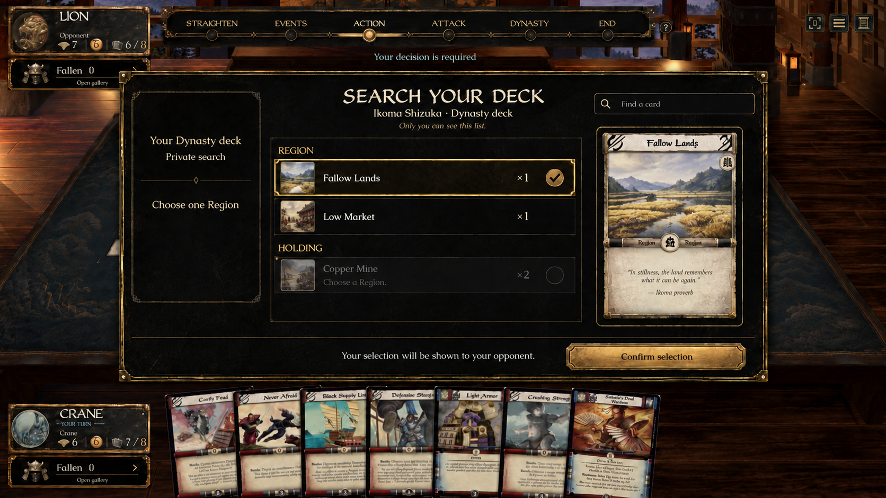
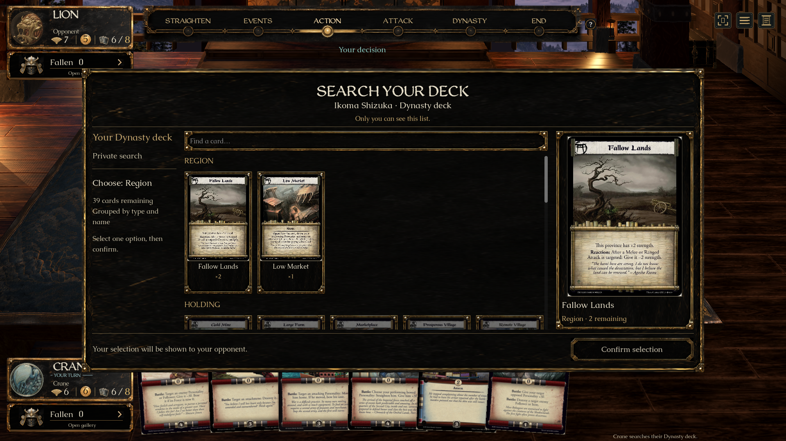
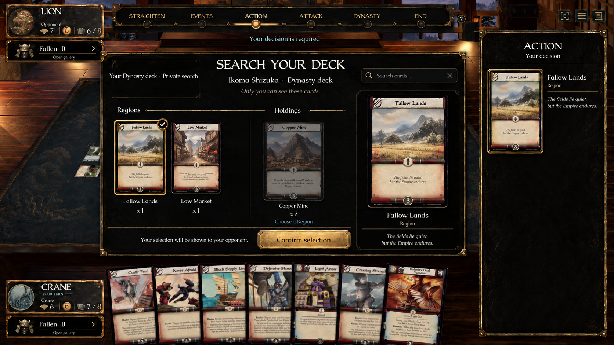
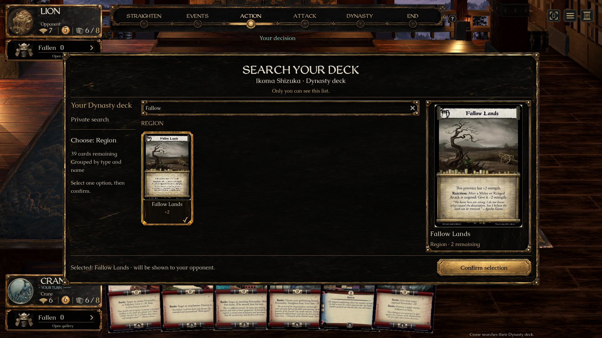

B’s full-card gallery inside A’s private search panel
Original approved concepts and actual native capture. Real period scans and established game typography are retained.

A — context column, private panel and internal inspection
Native — combined panel and gallery
B — full-card choices and counts
Native — selected full card, explicit confirmation